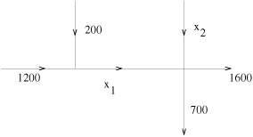
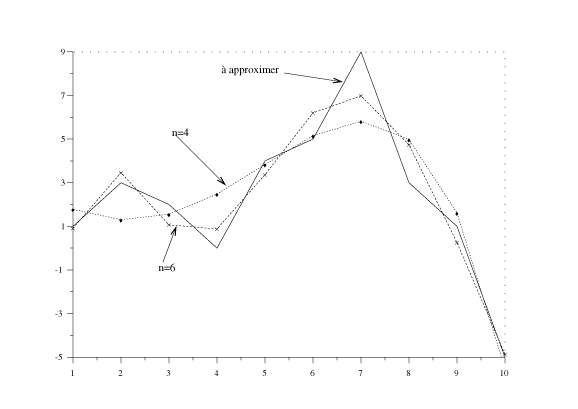

Scilab : un
logiciel libre pour le calcul scientifique
Résoudre et optimiser avec Scilab
Maurice GOURSAT (INRIA)
Tous ces articles en ligne sur Scilab ont été écrits pour
LINUX MAGAZINE FRANCE par les
développeurs du Scilab Group. Les articles sont sous
licence FDL (Free Documentation
Licence)
De nombreux problèmes se formulent de la manière suivante :
trouver le zéro d'une fonction ou son minimum, c'est-à-dire (la
valeur numérique de) x tel que F(x)=0 ou trouver
x qui donne Min (F(x)). Pour les formulations les
plus simples les deux problèmes sont équivalents. Les
classifications se font ensuite selon que F est linéaire ou non
et que x est ou non soumis à des contraintes. Nous allons prendre
quelques exemples et voir comment on les résout avec Scilab. Ces
exemples nécessitent la connaissance de quelques notions de base et une
lecture attentive pour ceux qui ont oublié leurs cours.
1 Exemple 1 : problème de trafic automobile.
De nombreux systèmes sont modélisés par un système
linéaire, c'est-à-dire par une relation :
A x=b
où A est une matrice (mxn) connue, b un vecteur de taille
n connu et x est le vecteur que l'on cherche.
Considérons le double carrefour suivant :

Les chiffres représentent le trafic c'est-à-dire le nombre de
véhicules par heure. On suppose évidemment que pour chaque
carrefour toutes les voitures qui arrivent en repartent : ceci est une des lois
de base des réseaux. C'est la loi dite des noeuds ou première loi
de Kirchhoff. Elle est valable pour les réseaux électriques,
d'eau, de télécommunications...
Dans notre cas on s'intéresse au débit en véhicules par
heure et pour les 2 trafics manquants on obtient :
x1=1200 + 200 pour la première
intersection et
x1 + x2=1600 + 700 pour la deuxième intersection.
On a donc comme ci-dessus A x=b avec
A=(1 0; 1 1) et b=(1400 2300) .
-->A=[1 0;1 1]
A =
! 1. 0. !
! 1. 1. !
-->b=[1400 ; 2300]
b =
! 1400. !
! 2300. !
-->x=A\b //on cherche la solution x de A.x=b
x =
! 1400. !
! 900. !
L'opérateur emph de Scilab résout donc le problème. Dans
le cas présent le résultat se fait sans calcul mais son
utilité peut s'imaginer lorsque A est la matrice
origines-destinations d'une ville et que l'on a quelques milliers de routes et
de carrefours et que l'on cherche les trafics sur les tronçons.
2 Exemple 2 : le zapping à la télévision
Un sondage rapide sur l'écoute des chaines de télévision
montre que lors d'une soirée pour les 4 chaines TF1, A2, FR3, M6 et CA
(autres chaines du cable) les pourcentages de téléspectateurs
sont respectivement de 30, 20, 15, 15, 20 (ces chiffres sont pure fiction et
toute ressemblance avec la réalité n'est que pure
coïncidence ! ). Chaque jour, au cours de la soirée les
téléspectateurs zappent d'une chaine vers les autres avec les
pourcentages suivants :
70 15 10 10 5
10 70 10 5 5
5 5 60 5 5
5 5 10 70 5
10 5 10 10 80
Précisons ce que signifie le tableau : sur la première colonne
figurent les pourcentages de ``zapping'' des téléspectateurs de
TF1. Il y a donc chaque jour 70% de ces téléspectateurs qui
restent sur TF1, 10% qui passent sur A2, 5% sur FR3, 5% sur M6 et 10% vers les
autres chaines. Les colonnes suivantes correspondent au ``zapping'' des
téléspectateurs des autres chaines. La diagonale du tableau,
c'est-à-dire 70 70 60 70 80
représentent donc la fidélité à la chaine.
On souhaite connaître l'évolution du nombre de
téléspectateurs par chaine avec ces informations. Plus
précisèment on souhaite savoir si la répartition entre les
chaînes va se stabiliser et si oui quelle sera la répartition
d'équilibre. Le vecteurs des pourcentages initiaux est :
p0=[30 20 15 15 20]
-->A
A =
! 0.7 0.15 0.1 0.1 0.05 !
! 0.1 0.7 0.1 0.05 0.05 !
! 0.05 0.05 0.6 0.05 0.05 !
! 0.05 0.05 0.1 0.7 0.05 !
! 0.1 0.05 0.1 0.1 0.8 !
-->p
p =
! 30. !
! 20. !
! 15. !
! 15. !
! 20. !
-->A*p
ans =
! 28. !
! 20.25 !
! 13.25 !
! 15.5 !
! 23. !
Au bout d'un jour les proportions par chaine sont donc données par
p(1)=A p ; puis le jour suivant par p(2)=A
p(1) et ainsi de suite et finalement la répartition stable est
telle que A p
s=ps
soit (A- I)ps=0
(avec la contrainte de somme égale à 100 pour les termes de p).
La répartition stable est telle que les téléspectateurs
qui quittent une chaine sont compensés par ceux des autres chaines qui
arrivent.
La première méthode consiste donc à trouver la solution
à notre problème en itérant la formule pi+1=A pi soit pn=An p0 :
-->B=A-eye(A) //on fabrique A-I
B =
! - 0.3 0.15 0.1 0.1 0.05 !
! 0.1 - 0.3 0.1 0.05 0.05 !
! 0.05 0.05 - 0.4 0.05 0.05 !
! 0.05 0.05 0.1 - 0.3 0.05 !
! 0.1 0.05 0.1 0.1 - 0.2 !
-->(A**30)*p //A*A*A*...*A*p
ans =
! 23.640942 !
! 19.25045 !
! 11.111111 !
! 15.873018 !
! 30.124479 !
l'opérateur ``élévation à la puissance''
noté ** s'applique donc à une matrice et il est donc
facile de trouver la répartition après 30 jours (on va voir avec
le résultat ci-dessous que pour 30 on a la répartition stable
avec beaucoup de précision).
L'autre méthode consiste à résoudre (avec
B=A-I) B . p=0. Ceci correspond à
trouver le ``noyau'' de B qui est donné par la commande
kernel
-->pp=kernel(B) //le noyau de B est la solution
pp =
! 0.5026089 !
! 0.4092673 !
! 0.2362262 !
! 0.3374660 !
! 0.6404674 !
-->pp=100*pp/sum(pp) //on transforme la solution en pourcentages
pp =
! 23.640662 !
! 19.250253 !
! 11.111111 !
! 15.873016 !
! 30.124958 !
-->B*pp //on vérifie que ce produit est bien zero
ans =
1.0E-14 *
! 0.0990852 !
! 0.1425075 !
! 0.0710586 !
! ¯.2032012 !
! 0.1138846 !
Cet exemple montre quelques manipulations simples et performantes de Scilab
avec du calcul vectoriel.
Cet exemple simple montre cependant un point important (et bien connu !) : pour
une chaine de télévision le point dominant est pour le long terme
le pourcentage de fidélité des téléspectateurs
plutôt que la performance absolue instantanée.
3 Systèmes dynamiques
On a vu dans un article précédent comment simuler des
systèmes dynamiques avec l'exemple des requins qui mangent les sardines
et celui du pendule qui glisse le long d'une courbe (article de mai 2000).
Les systèmes linéaires définis ci-dessus forment l'outil
de base pour l'étude des systèmes dynamiques, même si la
simulation se fait finalement avec des intégrateurs (ou solveurs de
systèmes différentiels,
algébro-différentiels...).
On peut écrire le modèle classique suivant :
| |
ì
í
î |
| x'(t) |
= |
A x(t) |
+ |
b(u(t)) |
| y(t) |
= |
cT x(t) |
|
|
|
(1) |
avec x(0)=x0
La première équation donne l'évolution du système
et la seconde la partie des variables que l'on observe; x est
l'état du système et u la commande qu'on applique pour
faire évoluer le système.
Dans le cas des requins et des sardines x serait un vecteur de deux
termes : le nombre de requins et le nombre de sardines. Le contrôle
u serait le nombre de sardines et de requins pêchés; on
peut imaginer le cas où l'observation est réduite à une
seule composante de x, par exemple le nombre de requins. En fait le
modèle de Lotka-Volterra n'est pas linéaire et n'entre donc pas
dans la classe de modèles que nous regardons ici.
Dans un autre cas, par exemple un système mécanique de type avion
le modèle comporte la position, la vitesse,
l'accélération. On peut donc avoir un modèle d'ordre
supérieur tel que :
yn(t) +
a1 yn-1(t) + ... + any(t)=q0 u(t) (2)
avec les conditions initiales :
y(0)=y0,
y'(0)=y1, ...
(3)
En posant simplement (on dit qu'on prend un état augmenté) :
x1(t)=y(t),x2(t)=y'(t), ...
on peut écrire le modèle sous la forme :
x'(t)=A x(t) + b u(t);
x(0)=x0
avec :
| A= |
é
ê
ê
ê
ê
ê
ê
ë |
|
| 0 |
1 |
0 |
0 |
... |
0 |
| 0 |
0 |
1 |
0 |
... |
0 |
| 0 |
0 |
0 |
1 |
... |
0 |
| ... |
... |
... |
... |
... |
... |
| 0 |
0 |
0 |
0 |
... |
1 |
| -an |
-an-1 |
-an-2 |
... |
... |
-a1
|
|
|
ù
ú
ú
ú
ú
ú
ú
û |
(4) |
et
| b= |
é
ê
ê
ê
ê
ê
ê
ë |
|
|
|
ù
ú
ú
ú
ú
ú
ú
û |
(5) |
La solution libre ( c'est-à-dire avec b=0) du système
différentiel est :
x(t)=eAt
x0 (6)
où eAt est
l'exponentielle de matrice, c'est-à-dire :
avec les propriétés suivantes :
| |
|
eAt=A eAt ; eA(t+s)=eAt eAs; (eAt)-1=e-At ;
eA 0=1
(8) |
-->A=rand(4,4) //matrice aleatoire
A =
! 0.2922267 0.5935095 0.6325745 0.4818509 !
! 0.5664249 0.5015342 0.4051954 0.2639556 !
! 0.4826472 0.4368588 0.9184708 0.4148104 !
! 0.3321719 0.2693125 0.0437334 0.2806498 !
-->expm(A) //l'exponentielle de la matrice A
ans =
! 2.1501546 1.477585 1.6726308 1.1853378 !
! 1.3102627 2.320914 1.3517984 0.9077929 !
! 1.4668403 1.4775185 3.2282155 1.264257 !
! 0.6898985 0.6707707 0.4436347 1.5931327 !
La fonction Scilab expm (la commande exp calcule
l'exponentielle ``simple'' c'est-à-dire terme à terme pour une
matrice, le m final signifie matricielle) n'est pas très utile pour
intégrer des systèmes différentiels car les
intégrateurs donnent de meilleurs résultats. Il est cependant
possible d'utiliser une forme simplifiée de la matrice (forme de Jordan
par exemple) et d'étudier certaines propriétés du
système différentiel, en particulier sa stabilité.
Notons que l'on a :
si U est une matrice de changement de base.
On peut voir que si A est une matrice diagonale, son exponentielle est
simplement la matrice diagonale dont les termes sont les exponentielles des
éléments de la diagonale de A. Il est alors facile de voir
si le système explose ou non. Si les termes sont à partie
réelle négative le sytème est stable :
exp(z*t) tend vers 0 lorsque t croît pourvu
que Re(z) < 0. C'est cette étude que permet la forme de
Jordan de la matrice.
4 Forme de Jordan et stabilité
Le résultat de base est : pour toute matrice carrée A il
existe une matrice de changement de base U qui transforme A sous
sa forme canonique de Jordan c'est-à-dire :
U-1. A
.U=J=diag(J1,J2,...,Jp)
(10)
où les Ji sont les blocs
de Jordan; un bloc Ji est
associé à la valeur propre li et sa taille est l'ordre de multiplicité
de cette valeur propre; il est de la forme :
| Ji= |
é
ê
ê
ê
ê
ê
ê
ë |
|
| li |
1 |
0 |
0 |
... |
0 |
| 0 |
li |
1 |
0 |
... |
0 |
| 0 |
0 |
li |
1 |
... |
0 |
| ... |
... |
... |
... |
... |
... |
| 0 |
0 |
0 |
0 |
... |
1 |
| 0 |
0 |
0 |
... |
... |
li |
|
|
ù
ú
ú
ú
ú
ú
ú
û |
(11) |
Nous pouvons donc reprendre la formule ci-dessus pour obtenir :
| eAt=U-1.
eJt .U=U-1 |
é
ê
ê
ê
ê
ê
ê
ê
ê
ê
ê
ë |
|
|
|
0 |
0 |
0 |
... |
0 |
| 0 |
|
0 |
0 |
... |
0 |
| 0 |
0 |
|
0 |
... |
0 |
| ... |
... |
... |
... |
... |
... |
| 0 |
0 |
0 |
0 |
... |
0 |
| 0 |
0 |
0 |
... |
... |
|
|
|
ù
ú
ú
ú
ú
ú
ú
ú
ú
ú
ú
û |
(12) |
On peut expliciter chaque terme de cette matrice. Un cas particulier important
est celui où chaque bloc de Jordan est de dimension 1,
c'est-à-dire que la matrice est diagonalisable.
Un système x'(t)=A x(t);
x(0)=x0 est asymptotiquement
stable si || x(t) || ® 0 lorsque
t ® ¥ .
Il est stable si x(t) reste borné et instable sinon.
Il est donc très facile de voir avec la mise sous forme de Jordan qu'un
système est stable si toutes les valeurs propres sont à partie
réelle négative et instable s'il existe une valeur propre
à partie réelle positive.
-->A
A =
! - 1. 2. 3. 4. 5. !
! - 2. - 3. 4. 5. 1. !
! - 3. - 4. - 5. 1. 2. !
! - 4. - 5. 1. - 2. 3. !
! - 5. - 1. - 2. - 3. - 4. !
-->spec(A) //donne les valeurs propres de A
ans =
! - 2.3085744 + 9.7098818i !
! - 2.3085744 - 9.7098818i !
! - 2.7463994 + 3.3236617i !
! - 2.7463994 - 3.3236617i !
! - 4.8900525 !
-->[J, U, jj]=bdiag(A) //on fait une diagonalisation par blocs
jj =
! 2. !
! 2. !
! 1. !
U =
! 0.1464163 0.6610705 0.6303059 - 0.2895151 - 0.0504537 !
! 0.3614366 0.5356768 - 0.4367886 0.6566914 0.2082125 !
! 0.4907292 - 0.2012461 - 0.1359894 - 0.2563754 - 0.8555927 !
! 0.7376988 - 0.0981921 - 0.3357698 - 0.2802899 0.5853825 !
! 0.2508209 - 0.4752837 0.5802959 0.5849911 0.0010181 !
J =
! - 2.2334457 - 9.4719406 0. 0. 0. !
! 9.9543962 - 2.383703 0. 0. 0. !
! 0. 0. - 2.4115925 2.7693088 0. !
! 0. 0. - 4.0294614 - 3.0812063 0. !
! 0. 0. 0. 0. - 4.8900525 !
Le résultat est donc formé d'un vecteur jj donnant les
tailles des blocs, de la matrice J avec les blocs sur la diagonale et la
matrice U de passage de A à U. Dans le cas
précédent 2 blocs de Jordan sont de dimension 2 car A est
considérée comme réelle et les valeurs propres sont
complexes conjuguées. Cette ambiguité est levée si on fait
l'opération sur les complexes :
-->A=A+%i*0; //on rend complexe la matrice A
-->[J, U, jj]=bdiag(A);
-->jj
jj =
! 1. !
! 1. !
! 1. !
! 1. !
! 1. !
-->J
J =
column 1 to 2
! - 2.3085744 - 9.7098818i 0 !
! 0 - 2.3085744 + 9.7098818i !
! 0 0 !
! 0 0 !
! 0 0 !
column 3 to 5
! 0 0 0 !
! 0 0 0 !
! - 2.7463994 + 3.3236617i 0 0 !
! 0 - 2.7463994 - 3.3236617i 0 !
! 0 0 - 4.8900525 !
Partant d'un matrice dont on ne connait pas les propriétés on
peut donc voir si cette matrice est celle d'un système stable et on va
pouvoir simuler con comportement en sachant que nous ne devons pas avoir
d'explosion numérique.
5 Systèmes non linéaires - Cas monovariable
On cherche donc à résoudre f(x)=0 ou encore
minimmiser f(x) sous la contrainte x1 < x < x2.
On peut résoudre une équation f(x)=0 par une
méthode de type sécante si on sait encadrer le zéro par
l'algorithme simple suivant :
est l'équation de la droite joignant les points x1,f(x1) et
x2,f(x2). On trouve ainsi une valeur de x
améliorant l'encadrement du zéro par :
6 Systèmes non linéaires - Cas
général
On veut maintenant résoudre un système non linéaire de
n équations à n inconnues, c'est-à-dire le
système suivant :
| F(x)= |
é
ê
ê
ë |
|
| f1
(x1,x2,...,xn)
|
| f2
(x1,x2,...,xn)
|
| ... fn (x1,x2,...,xn)
|
|
|
ù
ú
ú
û |
=0 (15) |
Différentes méthodes existent pour résoudre ce
problème : la plus simple est la méthode de Newton qui
procède par linéarisation et résolution du système
linéarisé de manière itérative; c'est la simple
généralisation de la sécante du cas monovariable.
Du développement autour d'un point :
| f(x)=f(x0) + (x - x0) f'(x0)
+ |
|
f''(x0) +
... (16) |
on conserve seulement les 2 premiers termes et le système
linéarisé s'écrit :
F(x)=F(x0) +
(x - x0)
J(x0)
(17)
où J est le jacobien :
Exemple :
| F(x)= |
é
ê
ê
ë |
|
| -x12 - x1x2 + 2 |
| 3 x22 + x2 x3 -4 |
| x33 + x12 -6 |
|
|
ù
ú
ú
û |
=0 (19) |
Le jacobien est :
| J= |
é
ê
ê
ë |
|
| -2 x1 - x2 |
-x1
|
0 |
| 0 |
6 x2
+ x3 |
x2
|
| 2 x1
|
0 |
3 x32 |
|
|
ù
ú
ú
û |
(20) |
Dans Scilab la fonction fsolve résout le problème; on
lui fournit un programme (en C, fortran ou langage Scilab) qui calcule la
valeur de la fonction pour une valeur d'argument donnée (ici
valeur).
On fournit si possible une fonction calculant le jacobien (ici jaco).
-->getf("valeur.sci");
-->getf("jaco.sci");
-->[x,v,info]=fsolve([0 0 0]',valeur,jaco)
info =
1.
v =
1.0E-12 *
! - 0.4463097 !
! 0.0710543 !
! - 4.7251092 !
x =
! - 1.9739351 !
! 0.9607306 !
! 1.2813065 !
Les essais ci-dessous montre l'intérêt de fournir le jacobien : un
appel simple ne converge pas si on part de (0 0 0); la convergence de l'appel
simple dépend fortement de la valeur initiale.
Dans ce cas les fonctions valeurs et jaco sont les suivantes :
function [v]=valeur(x)
x1=x(1);x2=x(2);x3=x(3);
v=zeros(3,1);
v(1)=-x1*x1-x1*x2 + 2;
v(2)=3*x2*x2+x2*x3 - 4;
v(3)=x3*x3*x3+x1*x1 - 6;
function [J]=jaco(x)
x1=x(1);x2=x(2);x3=x(3);
J=zeros(3,3);
J(1,1)=-2*x1-x2;J(1,2)=-x1;
J(2,2)=6*x2+x3;J(2,3)=x2;
J(3,1)=2*x1;J(3,3)=3*x3*x3;
-->[x,v,info]=fsolve([0 0 0]',valeur)
info =
4.
v =
! 1.9693403 !
! - 3.9999228 !
! - 5.9691468 !
x =
! 0.1758927 !
! - 0.0015834 !
! - 0.0439760 !
-->[x,v,info]=fsolve([1 -2 -2]',valeur)
info =
1.
v =
1.0E-14 *
! - 0.0444089 !
! - 0.0444089 !
! - 0.2664535 !
x =
! 2.2311307 !
! - 1.3347242 !
! 1.0072986 !
7 Approximation polynomiale
Tout le monde se souvient de l'expérience de physique qui donne une
série de points dans le plan (par exemple des mesures y pour
différentes valeurs de la variable x) et on trace la droite (de
régression) qui ``approxime'' le nuage de points : il s'agit simplement
de trouver la dépendance linéaire et de résumer
l'expérience par les 2 valeurs qui caractérisent la droite. Dans
notre cas on veut traiter le cas général : ne pas se restreindre
à une droite mais calculer le polynôme d'ordre donné qui en
est la meilleure approximation du nuage de points.
L'énoncé est donc : pour l'ensemble de points (xi yi) on cherche un polynôme
p(x)=p0 +
p1 x + p2 x2 + ... +
pn xn de degré n donné qui
réalise :
minp0,
p1, ... , pn å
(yi -
p(xi))2
Ceci se formule sous forme matricielle en écrivant :
X=( xn
xn-1 ...
x2 x 1)
P=( pn
pn-1 ...
p2 p1 p0)
Y=V * Pt
on construit ensuite la matrice de Vandermonde (la ligne i est
formée des puissances successives de i) et on fait une
résolution aux moindres carrés, ce qui donne en Scilab :
-->x=[1 2 3 4 5 6 7 8 9 10]'; //points equidistants
-->n=6;
-->y=[1 3 2 0 4 5 9 3 1 -5]';
-->V=zeros(length(x),n+1); //matrice nulle
-->V(:,n+1) = ones(length(x),1); //on ajoute une colonne de 1
-->for j = n:-1:1
--> V(:,j) = x.*V(:,j+1);
-->end
-->[Q,R] = qr(V,0); //Decomposition (Q,R), R triangulaire
-->p = R\(Q'*y);
-->r = y - V*p;
L'opérateur est l'opérateur de résolution d'un
système linéaire suivant : x=A \ b est en
fait la solution de A.x=b; Dans le cas ou la matrice est
singulière (ce qui est le cas ici) la résolution est faite aux
moindres carrés c'est-à-dire qu'on obtient x qui minimise
| Ax -b |
2. Nous avons à résoudre
p=V \ y que l'on remplace par une procédure plus
performante avec une décomposition QR de la matrice de Vandermonde.
La figure suivante représente l'approximation de 10 valeurs par des
polynômes de degré 4 et 6; la précision s'améliore
évidemment avec la croissance du degré.

8 Conclusion
Il aurait fallu commencer par avouer que le seul cas que l'on sait traiter
correctement est le cas linéaire; dans le cas non linéaire on se
ramène par différents moyens à une approximation (locale)
linéaire. C'est pour cette raison que l'utilisation des matrices est
généralisée et que Scilab qui est construit sur la
manipulation et les calculs matriciels est très utile. Dans ce qui
précède l'optimisation n'est que sous-jacente. Nous verrons plus
tard qu'elle devient explicite avec ses propres techniques lorsqu'il faut
résoudre des problèmes sous contraintes.
9 Contacts
Site Web de Scilab : http://www-rocq.inria.fr/scilab
Serveur ftp : ftp://ftp.inria.fr/INRIA/Scilab
Adresse email : Scilab@inria.fr
Newsgroup : comp.soft-sys.math.scilab
This document was translated from LATEX
by HEVEA.